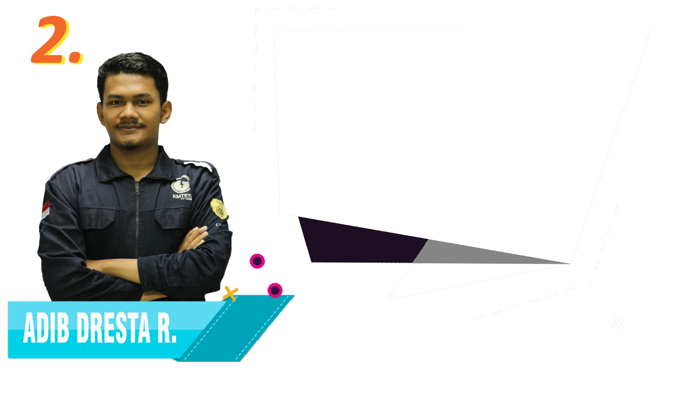
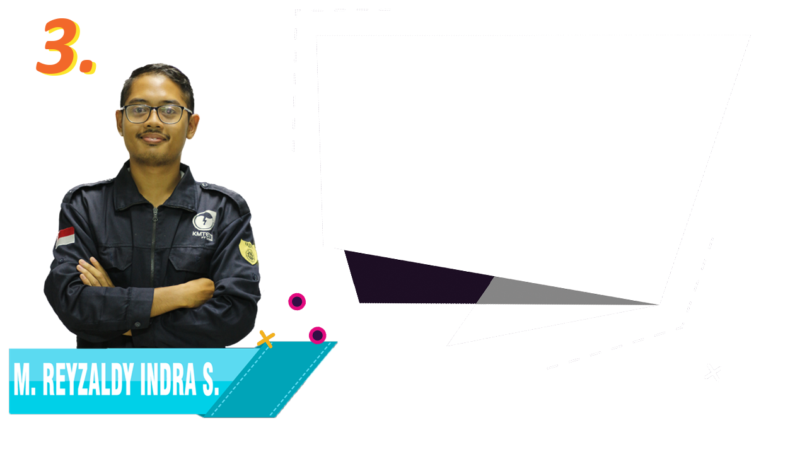

Menjadikan KMTETI sebagai wadah untuk mempererat persatuan dan kekeluargaan warga DTETI, ajang religius, prestasif, kontributif, dan sinergis dengan tetap menganut asas profesionalisme.

Visi:
Menjadikan KMTETI sebagai organisasi yang harmonis, apresiatif, serta dapat menjadi wadah bagi mahasiswa DTETI untuk berkontribusi di lingkup internal maupun eksternal DTETI.

Visi:
Mewujudkan KMTETI sebagai organisasi yang harmonis, kontributif, aspiratif, dinamis, solutif, dan berintegritas yang berdasar pada nilai-nilai Ketuhanan, profesionalitas, dan kekeluargaan.